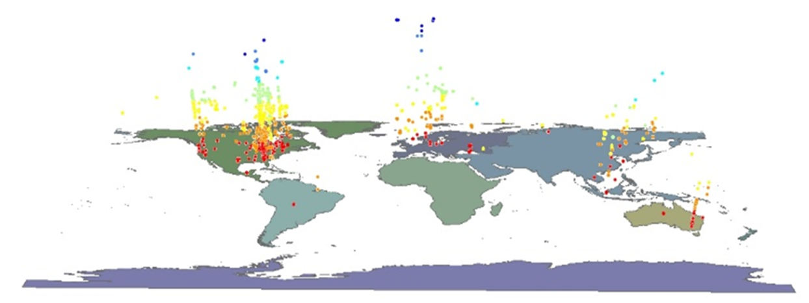

Use Business Intelligence and visualization to help people understand complex data.
Review the Fall 2026 course policies, grading structure, and official AI guidelines.
Course Introduction and the Value of Visualization.
Complete the ArcGIS Business Analyst Access Check.
IA 342 is designed to bridge the gap between raw data and human decision-making. While computational tools and Artificial Intelligence can rapidly organize and analyze vast amounts of data, humans still bear the ultimate responsibility for intelligence judgments and actions. This course empowers students to use Business Intelligence (BI) and visualization techniques to help people perceive patterns, understand context, and make clear, evidence-based visual communications.
Throughout the semester, we focus on the theory of visual design and the practical application of industry-standard platforms, specifically ArcGIS and Tableau. We move from foundational spatial analysis to exploratory data visualization, and finally to the creation of interactive, professional-grade visual analytics dashboards.
The course is structured to take students from raw data to actionable human understanding:
Data ➔ Visual Design & Spatial Analysis ➔ ArcGIS ➔ Tableau & Visual Analytics ➔ Interactive Dashboards ➔ Human Understanding & Decision
IA 342 is a core component of the Intelligence Analysis curriculum at James Madison University.
Dr. Xuebin Wei
Associate Professor, James Madison University (Geography / Intelligence Analysis)
Email: weixx@jmu.edu
Profile: Official JMU Faculty Profile
Biography: Dr. Wei’s teaching and research focus on data science and artificial intelligence, cloud computing, GIS and geospatial analysis, and social data analytics. He is the co-author of Social Data Analytics in the Cloud with AI.
This repository (JMU-Data/IA342) serves as the canonical public source for course materials, built with a “source-first, web-published” approach via GitHub Pages. The materials here are designed for transparency and reuse.
To protect student privacy and maintain operational security, this repository strictly contains public-facing content. All private grading, student submissions, personally identifiable information (PII), and Canvas LMS automation scripts are managed entirely outside this environment.